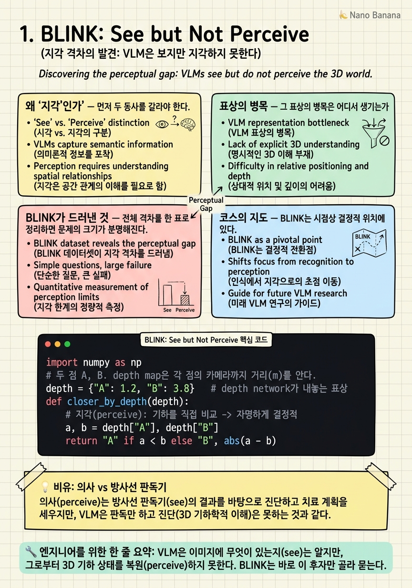

BLINK: See but Not Perceive
사람은 95.7%를 맞히고, GPT-4V는 51.26%, Gemini Pro는 45.72%를 맞힌다. 정답이 넷 중 하나인 문제에서, 최신 멀티모달 모델이 무작위 찍기보다 겨우 13~14점 위에 있다는 뜻이다.

🎯 학습 목표
- '보다(see)'와 '지각하다(perceive)'를 표상 수준에서 구분하고, VLM이 어느 쪽에서 실패하는지 설명한다.
- projection bottleneck이 무엇이며 왜 2D semantic token이 3D 기하를 잃는지 파이프라인 단계로 짚는다.
- BLINK의 subtask별 격차 패턴(고수준 VQA는 상대적으로 낫고 depth·correspondence가 최악)이 무엇을 시사하는지 해석한다.
- 이 진단이 앞으로 이어질 9편의 논문(데이터·grounding·depth·reasoning·RL·reconstruction)이 왜 존재하는지의 출발점임을 지도로 이해한다.
이 코스가 추적하는 것은 하나의 문제다. 언어 모델이 다루는 이산 token과, 세계가 실제로 존재하는 연속적 3D 기하 사이의 표상 불일치(representational mismatch). 서베이 Spatial Reasoning in MLLMs는 이 불일치를 세 가지 구조적 결함으로 이름 붙인다. 2D encoder가 기하가 아니라 의미 정렬을 위해 tokenize하는 projection bottleneck, 기하 법칙 대신 공존 통계를 학습하는 patterns-not-physics, 그리고 egocentric과 allocentric을 오가는 명시적 장치가 없는 reference-frame instability다.
이 세 결함은 추상적으로 들린다. 1장의 역할은 그것을 측정 가능한 하나의 숫자로 내려앉히는 것이다. BLINK는 사람이 이미지를 한 번 흘깃 보고 즉각 푸는 14개의 고전 computer-vision 과제를 3,807개의 객관식 문제로 재구성했다. depth 어느 점이 더 가까운가, 두 뷰의 대응점은 어디인가, 물체는 몇 개인가 같은 질문들이다. caption을 잘 다는 능력이 아니라, 장면의 기하를 읽는 능력을 묻는다.
결과는 이 코스 전체의 논지를 한 문장으로 압축한다. 모델은 본다. 그러나 지각하지 못한다. 이 장은 그 격차를 진단하고, 왜 그것이 world knowledge의 부족이 아니라 architecture의 문제인지 보인 뒤, 나머지 9편이 각각 이 세 결함의 어느 축을 공격하는지 지도를 편다.
핵심 내용
왜 '지각'인가
먼저 두 동사를 갈라야 한다. 'see'는 광자를 받아 픽셀을 표상으로 바꾸는 일이고, 'perceive'는 그 표상으로부터 세계의 상태를, 특히 기하적 상태를 복원하는 일이다. VLM은 전자에 능하다. 이미지 안에 컵과 책상이 있다는 것을 안다. 문제는 후자다. 컵이 책상보다 카메라에 더 가까운지, 두 물체의 상대 깊이가 얼마인지를 묻는 순간 성능이 무너진다.
BLINK가 겨냥한 과제들은 의도적으로 caption으로 우회할 수 없게 설계됐다. Spatial_Relation, Relative_Depth, Multi-view_Reasoning, Object_Localization, Counting 같은 subtask는 '무엇이 있는가'가 아니라 '어디에, 얼마나 떨어져, 어느 시점에서'를 묻는다. 사람이라면 눈 깜박할 새 답하는, 그래서 벤치마크 이름이 BLINK인 질문들이다.
숫자가 진단을 못박는다. 사람은 평균 95.7%를 맞힌다. GPT-4V는 51.26%, Gemini Pro는 45.72%에 그친다. 4지선다에서 무작위 기댓값이 약 25%임을 감안하면, 상당수 subtask에서 최신 모델은 찍기보다 겨우 13~14점 위에 있을 뿐이다. BLINK 저자들의 요약은 이렇다.
Multimodal LLMs can See but Not Perceive.
멀티모달 LLM은 볼 수 있으나 지각하지 못한다.
중요한 것은 이 실패가 '어려운 지식'을 요구해서가 아니라는 점이다. 이 문제들은 지식 시험이 아니라 지각 시험이다. 모델이 세계에 대해 무엇을 아는가가 아니라, 눈앞의 이미지로부터 기하를 읽어내는가를 묻는다. 그리고 바로 거기서 무너진다는 사실이, 문제의 위치가 지식이 아니라 표상에 있음을 가리킨다.

표상의 병목
그 표상의 병목은 어디서 생기는가. 전형적인 VLM 파이프라인을 따라가 보자. RGB 이미지는 ViT에 들어가 패치 단위로 잘리고, 각 패치는 embedding이 된다. 이 embedding들은 CLIP류 대조 학습으로 텍스트와 정렬되도록 훈련됐기 때문에, 태생적으로 '이 패치가 무슨 의미인가'를 부호화한다. '털이 있고 귀가 뾰족하다' 같은 semantic feature는 살아남지만, '이 패치가 카메라로부터 몇 미터인가'라는 metric depth는 학습 목표에 없어 압축 과정에서 소실된다.
이 semantic token들이 projection layer를 거쳐 LLM의 입력 공간으로 사영되는 순간, 병목은 완성된다. 세계는 연속적 3D였는데, LLM이 받는 것은 의미로 정렬된 이산 token의 나열이다. depth·시차·surface normal 같은 기하 정보는 이 사영을 살아서 통과하지 못한다. 이것이 서베이가 말한 projection bottleneck의 실체다.
결과적으로 LLM은 이미지를 '의미 개념의 자루(bag of semantic concepts)'로 받는다. 어떤 개념들이 함께 등장하는지는 알지만, 그것들이 3D 공간에서 어떻게 배치됐는지는 모른다. 그래서 모델은 'cup on table' 같은 공존 통계로 답을 근사하려 한다. 서베이의 두 번째 결함, patterns-not-physics가 여기서 자란다.
BLINK의 subtask 프로파일이 이 가설의 직접 증거다. 모델은 고수준 semantic VQA에서는 상대적으로 덜 실패하고, low-level 지각인 relative depth와 correspondence에서 가장 크게 무너진다. 만약 문제가 지식이었다면 실패는 과제 전반에 고르게 퍼졌을 것이다. 실패가 유독 기하 과제에 몰린다는 사실은, 병목이 지식이 아니라 표상 파이프라인의 특정 지점에 있음을 드러낸다.
BLINK가 드러낸 것
전체 격차를 한 표로 정리하면 문제의 크기가 분명해진다. 사람과 두 최상위 모델, 그리고 무작위 기댓값을 나란히 두면, 오늘의 VLM이 지각 축에서 어디쯤 서 있는지 보인다.
| 지표 | Human | GPT-4V | Gemini Pro | Random |
|---|---|---|---|---|
| BLINK 전체 정확도 | 95.7% | 51.26% | 45.72% | ~25% |
| 무작위 대비 여유 | +70.7 | +26.3 | +20.7 | 0 |
표에서 읽어야 할 것은 두 가지다. 첫째, human-model 격차가 약 44점에 달한다. 이것은 미세 조정으로 좁힐 오차가 아니라 능력의 종류가 다르다는 신호다. 둘째, 무작위 대비 여유가 subtask에 따라 급감한다. 저자들이 보고하듯 여러 subtask에서 모델은 random보다 13~14점 위에 머무는데, 특히 relative depth와 visual correspondence가 가장 낮은 구간을 형성한다.
subtask별 정확한 수치를 여기서 지어낼 필요는 없다. 논지에 필요한 사실은 단 하나, 실패가 균일하지 않고 low-level 기하 과제에 집중된다는 방향성이다. 고수준 의미 질문에서 상대적으로 선방하고 depth·correspondence에서 바닥을 친다는 이 비대칭이, 앞 절의 projection bottleneck 가설을 눈으로 확인시켜 준다.
대조 실험 하나가 이 진단에 쐐기를 박는다. relative depth 문제를 monocular depth network 같은 전용 vision model에 주면 거의 자명하게 풀린다. 같은 RGB 입력을 받고도 depth를 명시적으로 표상하도록 훈련된 모델은 통과하고, 의미 정렬만 배운 VLM은 실패한다. 입력이 같으니 격차의 원인은 world knowledge가 아니라 표상과 architecture다. 이것이 BLINK가 남긴 가장 값진 문장이다.

코스의 지도
BLINK는 시점상 결정적 위치에 있다. 2024년 4월, 아직 비디오 공간지능도 full spatial reasoning 벤치도 등장하기 전의, perception 수준 진단이다. 이후 VSI-Bench, SPHERE, OmniSpatial이 정지 지각에서 동적·다중시점 추론으로 난도를 올리지만, 그 모든 escalation은 BLINK가 먼저 '지각 자체가 안 된다'를 못박았기에 의미를 갖는다.
진단이 '데이터 문제'의 얼굴을 하고 있음이 밝혀지면, 다음 수는 데이터로 답하는 것이다. 2장 SpatialVLM은 RGB만으로 2B 규모의 합성 spatial VQA를 만들어 병목을 데이터로 우회하려 시도한다. 3장은 region grounding과 depth plugin으로 whole-image의 한계를 넘고, 4장은 depth를 아예 읽고 질의하는 도구로 끌어들인다. 5장은 무대를 비디오로 옮기며 CoT가 공간 추론에서 잘 듣지 않는다는 반전을 만난다.
이후 절반은 능력의 지도와 정면돌파다. 6장은 단일 벤치 대신 taxonomy로 능력을 분해하고, 7장은 가장 안 되는 축인 perspective-taking을 mental simulation으로 친다. 8장은 그 시뮬레이션의 토대인 metric depth를 VLM이 스스로 언어 인터페이스 안에서 내놓게 하며, 9장은 supervised 데이터 생성 대신 verifiable reward로 추론을 활성화한다. 10장은 reward·grounding·reconstruction이 하나로 합쳐지는 프런티어다.
이 10편을 한 축에 세우면, 각각이 서베이의 세 결함 중 어디를 공략하는지 보인다. 아래 표가 코스의 나침반이다.
| 결함 (서베이 2511.15722) | 증상 | 이 결함을 공략하는 장 |
|---|---|---|
| projection bottleneck | 2D 의미 token이 3D 기하를 잃음 | 3(depth plugin), 4·8(depth-native), 10(reconstruction) |
| patterns, not physics | 기하 법칙 대신 공존 통계로 근사 | 2(합성 데이터), 5(cognitive map), 9(verifiable RL) |
| reference-frame instability | egocentric↔allocentric 전환 부재 | 6(taxonomy), 7(perspective-taking) |
BLINK는 이 표의 어느 칸도 채우지 않는다. BLINK는 표 자체가 왜 필요한지를 증명한 장이다. 나머지 아홉 편은 이 진단에 대한 아홉 가지 응답이다.
💡 비유로 이해하기
한 사람에게 흉부 X-ray를 보여주고 '무엇이 보이느냐'고 물으면, 훈련받지 않은 사람도 '갈비뼈, 폐, 심장 그림자'라고 답한다. 이미지에 무엇이 있는지 인식하는 것, 그것이 'see'다. 그러나 '이 결절이 흉벽에서 몇 cm 안쪽에 있는가, 앞쪽인가 뒤쪽인가'를 물으면, 이름을 대는 능력은 아무 소용이 없다. 답하려면 2D 그림자에서 3D 위치를 복원해야 한다. 그것이 'perceive'다.
VLM은 이름을 대는 사람에 가깝다. 방대한 의미 어휘를 갖췄지만, 그림자에서 깊이를 세우는 판독 훈련은 받지 않았다. 반면 monocular depth network는 이름은 하나도 모르면서 깊이만은 정확히 재는 전용 판독기다. BLINK가 던지는 질문은 판독기의 질문이고, 그래서 어휘가 아무리 풍부한 VLM도 통과하지 못한다.
이 비유의 요점은 해결책의 방향까지 가리킨다는 데 있다. 판독 능력은 더 많은 의학 상식을 외워서 생기지 않는다. 깊이를 명시적으로 표상하고 측정하도록 훈련해야 생긴다. 코스의 뒷장들이 depth를 feature로, 도구로, 언어 인터페이스로, 나아가 reconstruction으로 끌어들이는 이유가 여기에 있다.
💻 코드 예시
'perceive'와 'see'의 차이를 numpy 30줄로 재현한다. monocular depth map은 '어느 점이 더 가까운가'를 자명하게 답하지만, semantic embedding 위의 cosine similarity는 같은 질문에 아무 정보도 주지 못한다. 지각과 의미가 서로 다른 표상 축임을 보이는 미니 실험이다.
import numpy as np
# 두 점 A, B. depth map은 각 점의 카메라까지 거리(m)를 안다.
depth = {"A": 1.2, "B": 3.8} # depth network가 내놓는 표상
def closer_by_depth(depth):
# 지각(perceive): 기하를 직접 비교 -> 자명하게 결정적
a, b = depth["A"], depth["B"]
return "A" if a < b else "B", abs(a - b)
# semantic embedding: CLIP류 token은 '의미'만 부호화한다.
# A=빨간 컵, B=파란 컵. 둘 다 '컵'이라 의미상 거의 동일.
emb = {
"A": np.array([0.90, 0.10, 0.05]), # cup-ness 강함
"B": np.array([0.88, 0.12, 0.04]), # cup-ness 강함
"query_closer": np.array([0.02, 0.03, 0.99]), # '더 가까운' = 기하 개념
}
def cos(u, v):
return float(u @ v / (np.linalg.norm(u) * np.linalg.norm(v)))
def closer_by_semantics(emb):
# 의미(see): 'closer' 질의와의 유사도로 답을 근사하려 시도
sa = cos(emb["A"], emb["query_closer"])
sb = cos(emb["B"], emb["query_closer"])
winner = "A" if sa > sb else "B"
return winner, abs(sa - sb)
winner_d, margin_d = closer_by_depth(depth)
winner_s, margin_s = closer_by_semantics(emb)
print(f"[perceive/depth ] closer={winner_d}, margin={margin_d:.2f} (결정적)")
print(f"[see/semantics ] closer={winner_s}, margin={margin_s:.3f} (근거 없음, 사실상 무작위)")closer_by_depth는 두 스칼라 깊이를 직접 비교하므로 margin이 2.6m로 크고 답이 결정적이다. 이것이 지각이다. closer_by_semantics는 'closer'라는 기하 개념 벡터와 각 물체 embedding의 cosine을 재지만, 두 물체가 의미상 거의 같은 '컵'이라 유사도 차이(margin)가 0에 수렴한다. 의미 표상에는 '더 가깝다'를 결정할 기하가 애초에 담겨 있지 않기 때문이다. BLINK의 relative depth에서 VLM이 무너지고 depth network가 통과하는 구조가 이 대비다.
🏭 현업에서의 평가
✅ 시니어가 보는 것
- 'see'와 'perceive'를 표상 수준에서 구분하고, projection bottleneck을 파이프라인 단계로 지목할 수 있는가.
- 실패가 균일하지 않고 low-level 기하 과제에 몰린다는 사실에서 원인을 역추론하는 진단 감각.
- 같은 입력을 받는 depth network 대조 실험처럼, 원인을 knowledge와 architecture로 분리하는 실험 설계 능력.
- 벤치마크 수치를 논지의 증거로 인용하되, 검증되지 않은 per-cell 숫자는 지어내지 않는 정직성.
⚠️ 레드 플래그
- GPT-4V의 낮은 점수를 '모델이 아직 덜 똑똑해서'로 뭉뚱그리며 표상 축을 못 짚는다.
- '데이터를 더 넣으면 된다'로만 결론내고 projection bottleneck이라는 구조적 원인을 놓친다.
- 객관식 정확도에서 무작위 기댓값(약 25%) 기준선을 무시하고 51%를 '절반은 맞혔다'로 오독한다.
- BLINK를 spatial reasoning 벤치로 뭉뚱그리며 perception-level 진단이라는 위치와 시점(2024.04)을 흐린다.
🎤 예상 인터뷰 질문 (클릭하면 모범답안)
GPT-4V가 BLINK에서 51%인데 사람은 95.7%입니다. 이 44점 격차의 원인을 데이터 부족이 아닌 다른 방향으로 설명해 보세요.
격차의 위치는 지식이 아니라 표상입니다. BLINK는 relative depth·correspondence 같은 low-level 지각을 묻는데, VLM의 ViT embedding은 CLIP류 의미 정렬로 훈련돼 metric depth가 학습 목표에 없습니다. 그래서 semantic token이 projection layer를 통과하는 순간 3D 기하가 소실됩니다. 같은 RGB를 받는 monocular depth network가 relative depth를 자명하게 푼다는 점이 결정적 증거로, 원인이 world knowledge가 아니라 architecture임을 보입니다.
BLINK에서 모델이 고수준 semantic VQA보다 depth·correspondence에서 더 크게 실패한다는 비대칭을, 어떤 가설의 증거로 해석하겠습니까?
projection bottleneck 가설의 직접 증거로 해석합니다. 만약 실패 원인이 지식이었다면 오류가 과제 전반에 고르게 퍼졌을 텐데, 실제로는 기하 과제에 집중됩니다. 이는 표상 파이프라인이 의미는 보존하고 기하는 버린다는 뜻입니다. 즉 모델이 이미지를 의미 개념의 자루로 읽으며 공존 통계로 답을 근사한다는 patterns-not-physics 결함과도 연결됩니다.
이 진단을 받아든 뒤, 다음에 시도할 연구 방향 세 갈래를 코스 흐름과 무관하게 스스로 제안한다면?
첫째, depth를 표상 안으로 넣는 방향입니다. depth를 feature로 주입하거나 입력 채널로 읽게 하면 병목의 상류를 고칠 수 있습니다. 둘째, 데이터로 우회하는 방향으로, RGB에서 spatial VQA를 대량 합성해 모델이 기하 관계를 명시적으로 학습하게 합니다. 셋째, 추론을 활성화하는 방향으로, 정답 여부를 검증 가능한 reward로 삼아 RL로 공간 추론 능력을 끌어올립니다. 실제로 이 코스의 후속 논문들이 각각 이 세 갈래를 밟습니다.
✨ 핵심 요약
See ≠ Perceive
VLM은 이미지에 무엇이 있는지(see)는 알지만, 그로부터 3D 기하 상태를 복원(perceive)하지 못한다. BLINK는 바로 이 후자만 골라 묻는다.
44점의 격차
Human 95.7% vs GPT-4V 51.26%, Gemini Pro 45.72%. 4지선다 무작위 25% 위로 여러 subtask에서 겨우 13~14점. 미세조정으로 좁힐 오차가 아니라 능력 종류의 차이다.
projection bottleneck의 가시화
ViT embedding이 CLIP류 의미 정렬로 훈련돼, projection layer를 지나며 depth·시차 같은 기하가 소실된다. LLM은 이미지를 의미 개념의 자루로 받는다.
실패의 비대칭이 곧 진단
고수준 semantic VQA는 상대적으로 낫고 relative depth·correspondence가 최악이다. 실패가 기하 과제에 몰린다는 방향성이 병목의 위치를 특정한다.
architecture 문제이지 지식 문제가 아니다
같은 RGB를 받는 monocular depth network는 relative depth를 자명하게 푼다. 입력이 같으니 원인은 world knowledge가 아니라 표상과 architecture다.
시점상 결정적 위치
BLINK(2024.04)는 비디오·full reasoning 벤치 이전의 perception-level 진단이다. VSI-Bench·OmniSpatial의 escalation은 이 진단 위에서만 의미를 갖는다.
세 결함이 코스의 나침반
서베이의 projection bottleneck·patterns-not-physics·reference-frame instability가 10편의 논문을 정렬하는 축이다. BLINK는 그 표가 왜 필요한지를 증명한 장이다.
- Xingyu Fu et al. (2024). BLINK: Multimodal Large Language Models Can See but Not Perceive. ECCV 2024. arXiv:2404.12390